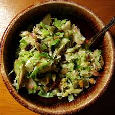

Don't be scared of raw Brussels sprouts - they are delicious!
by Ann Freele
Whisk shallot, vinegar, oil, Dijon mustard, honey, salt, and pepper together in a small bowl.
Brussels sprouts, apples, cranberries, almonds, sunflower seeds, and pumpkin seeds in a bowl; pour vinegar mixture over and toss to combine.